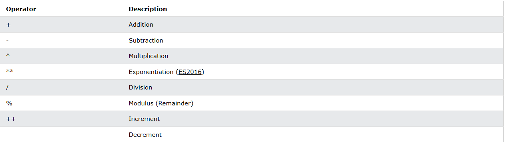

JavaScript Arithmetic
JavaScript Arithmetic Operators
Arithmetic operators perform arithmetic on numbers (literals or variables).

Arithmetic Operations
A typical arithmetic operation operates on two numbers.
The two numbers can be literals:
let x = 100 + 50;
or variables
let x = a + b;
or expressions:
let x = (100 + 50) * a;
Operators and Operands
The numbers (in an arithmetic operation) are called operands
The operation (to be performed between the two operands) is defined by an operator.

Adding
The addition operator (+) adds numbers:
let x = 5;
let y = 2;
let z = x + y;
Subtracting
The subtraction operator (-) subtracts numbers.
Example
let x = 5;
let y = 2;
let z = x - y;
Multiplying
The multiplication operator (*) multiplies numbers.
Example
let x = 5;
let y = 2;
let z = x * y;
Dividing
The division operator (/) divides numbers.
Example
let x = 5;
let y = 2;
let z = x / y;
Remainder
The modulus operator (%) returns the division remainder.
Example
let x = 5;
let y = 2;
let z = x % y;
Incrementing
The increment operator (++) increments numbers.
Example
let x = 5;
x++;
let z = x;
Decrementing
The decrement operator (--) decrements numbers.
Example
let x = 5;
x--;
let z = x;
Exponentiation
The exponentiation operator (**) raises the first operand to the power of the second operand
Example
let x = 5;
let z = x ** 2;
x ** y produces the same result as Math.pow(x,y):
let x = 5;
let z = Math.pow(x,2);
Operator Precedence
perator precedence describes the order in which operations are performed in an arithmetic expression.
Example
let x = 100 + 50 * 3;
Multiplication has precedence over addition.
Is the result of example above the same as 150 * 3, or is it the same as 100 + 150?
Is the addition or the multiplication done first?
As in traditional school mathematics, the multiplication is done first.
Multiplication (*) and division (/) have higher precedence than addition (+) and subtraction (-).
And (as in school mathematics) the precedence can be changed by using parentheses.
When using parentheses, the operations inside the parentheses are computed first:
let x = (100 + 50) * 3;
When many operations have the same precedence (like addition and subtraction or multiplication and division), they are computed from left to right:
let x = 100 + 50 - 3;
let x = 100 / 50 * 3;